Cinque modi di abitare tra la piazza e il giardino d’inverno.
Piazza Regina Margherita 22 San Gregorio di Catania
STUDIO DI FATTIBILITÀ ARCHITETTONICA APPARTAMENTO AL PRIMO PIANO + GARAGE SU VICO PIAZZA 05 NOVEMBRE 2026 / REVISIONE 01
ARCHAI / CASATATOTATACASA MARGHERITA · SAN GREGORIO DI CATANIAA01
01 / IL MANDATO
Cosa state comprando
La prima distinzione è tra la casa, i suoi spazi esterni e i due locali al piano terra.
La casa ha due estremi molto diversi: il balcone che appartiene alla piazza e il terrazzo raccolto tra i tetti. La proposta più interessante lavora su questa differenza, senza occupare la stanza più bella con un solaio.
La scelta per voi
Se vi servono due camere vere, partirei da P02: ridisegna il fronte e conserva la profondità del soggiorno. Se basta una camera stabile, P01 offre la riserva più ampia per restaurare pavimenti, infissi e bagno.
Decisione prima di trattare: se il giardino chiuso è irrinunciabile, chiedere un riscontro scritto sulla compatibilità con la classe monumentale di Palazzo Lombardo (A04), sul terrazzo realmente misurato. Considerare il volume alto come opportunità, senza attribuirgli un valore abitabile.
Unità · Fg. 2, p.lla 785
Consistenza / offerta
Sub 8 · A/2
Casa T–1, civico 22. 167 m² catastali; 165 m² nell’annuncio. Richiesta € 123.000.
Sub 10 · C/6
Garage T, Vico Piazza s.n. 66 m² lordi, 52 utili. Acquisto separato: € 59.000.
Sub 9 · C/1
Bottega T, civici 23–24, 92 m² catastali. Esclusa da superfici, accessi e costi di progetto.
Prezzo richiesto, non perizia
€ 182.000 è la somma delle due richieste, prima di lavori e spese di acquisto. La classe A2 dichiarata nell’annuncio è energetica: chiedere l’APE con indice numerico e impianti considerati. La categoria catastale A/2 è un altro dato.
Come leggere: A02–A04 territorio e tutela · R01–R04 rilievo documentario · P01–P05 alternative · D01–D05 dettagli · G01–G02 garage · E01–E04 scelta, costi, verifiche e fonti.
ARCHAI / CASATATOTATACASA MARGHERITA · SAN GREGORIO DI CATANIAA02
02 / LETTURA DAL CIELO
Dal satellite alla particella
Tre scale rispondono a tre domande diverse: dove si trova il centro, com’è costruito l’isolato, a quale particella appartiene la casa.
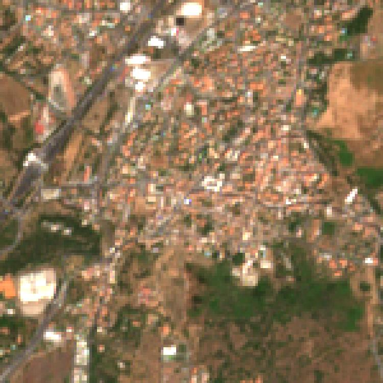
01 · Sentinel‑2A / Copernicus, 24.07.2025. Finestra 1.500 × 1.500 m, pixel originario 10 m. Centro immagine: area della piazza.
Territorio
La macchia costruita è continua intorno al centro; le aree verdi più estese si leggono ai margini del ritaglio. Un terrazzo di 12–17 m² è più piccolo di un solo pixel da 100 m².
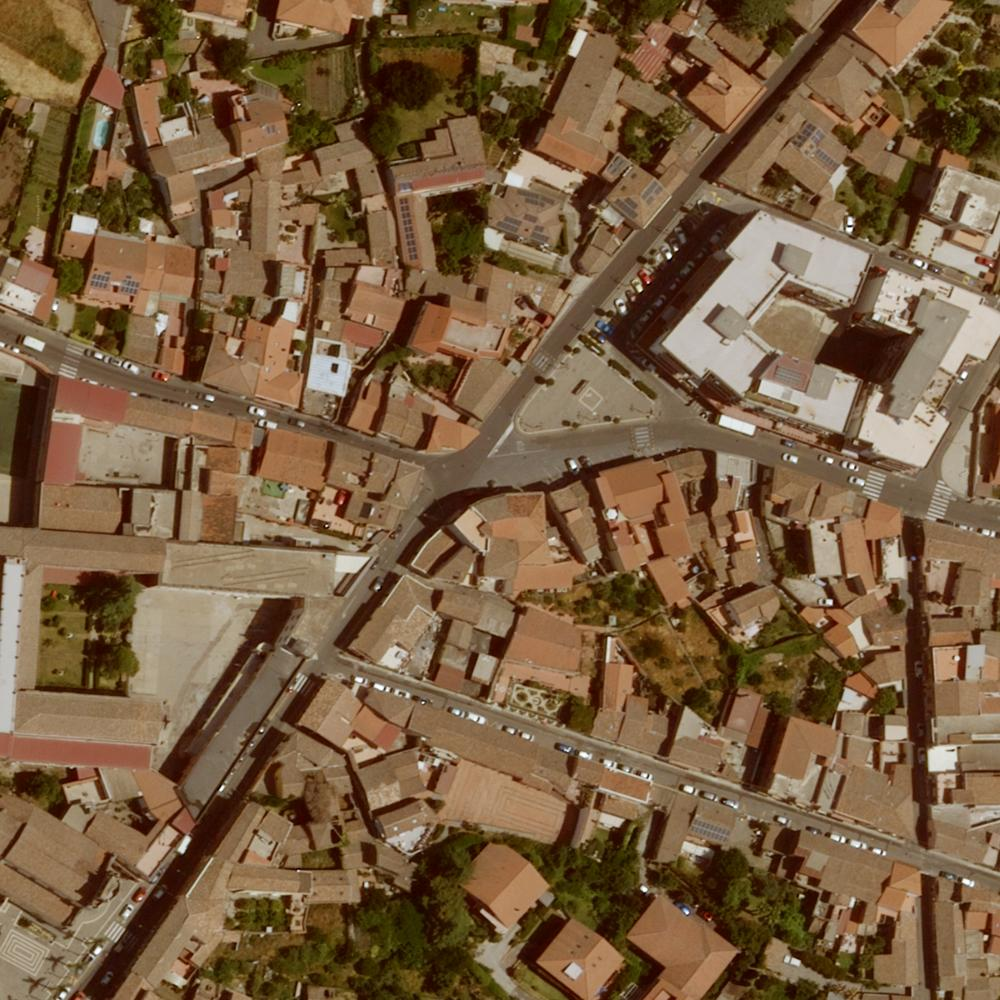
02 · Ortofoto AGEA 2022 / SITR Sicilia. Campo 240 × 240 m; nord in alto. Centro sul riferimento dell’annuncio.
Isolato
La piazza triangolare apre il tessuto fitto dei tetti. Il fronte urbano segue una curva; il retro è serrato da coperture e vicoli. Non leggere i salti di colore come salti certi di quota.
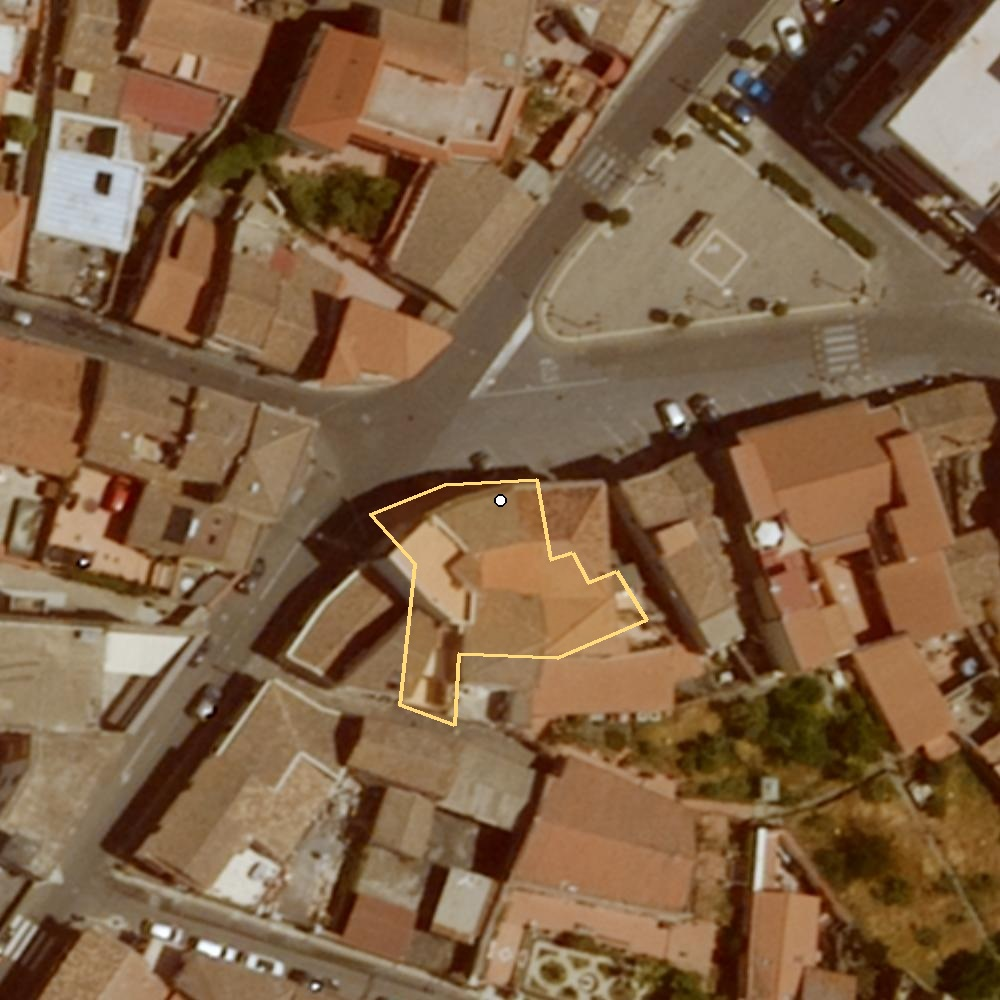
03 · AGEA 2022 + WMS catastale, campo 100 × 100 m. Giallo: contorno indicativo della 785. Bianco: pin dell’agenzia.
Identificazione
Il numero 785 è leggibile nella mappa catastale alla tavola successiva. Il punto RE/MAX (37,5661274 N; 15,1098858 E) cade vicino al fronte: la particella è più ampia della singola unità. Nessun confine di subalterno è osservabile dal satellite.
ARCHAI / CASATATOTATACASA MARGHERITA · SAN GREGORIO DI CATANIAA03
02 / CLIMA, FRONTI E CONFINI
Luce di piazza, calore sul retro
Orientamento letto dalla rosa del DOCFA; sole e ombre sono scenari geometrici, da controllare con bussola e rilievo delle quinte.
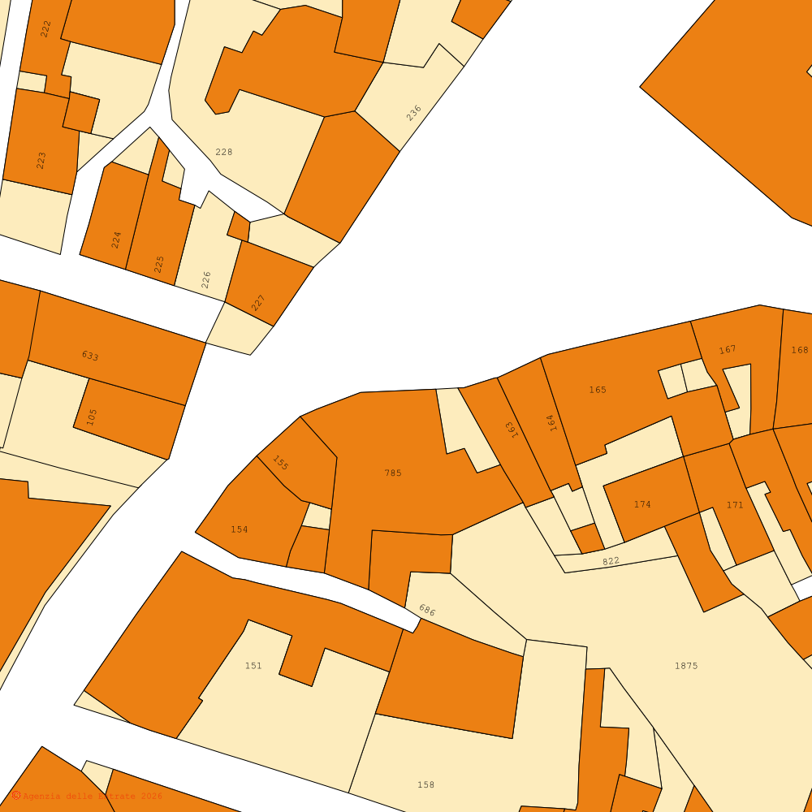
Agenzia delle Entrate · WMS particelle, fabbricati e numeri. Campo 100 m, nord in alto; 785 al centro.
Le sagome catastali e le falde della ripresa non coincidono perfettamente: epoche, proiezione dei tetti e precisione differiscono. Il contorno giallo è una lettura del mappale, non un rilievo dei limiti.
Due esposizioni leggibili; la terza resta da attribuire
La rosa della p. 11 orienta indicativamente il fronte basso della tavola verso NE/ENE, il retro verso SO/OSO (circa 60°/240°, lettura grafica). Sul WMS, i tratti del mappale che costeggiano la piazza hanno invece normali prossime a N/NNO (circa 340–360°). Subalterno e mappale non coincidono. Nessuno dei due azimut basta per qualificare la serra. La terza esposizione dichiarata non è assegnabile a un vano con certezza.
Sole e vicini
Alla latitudine di 37,57°, l’altezza solare teorica al mezzogiorno solare è circa 29° in dicembre, 52° agli equinozi, 76° in giugno. Una quinta alta 3 m sopra il terrazzo proietta sul piano circa 5,4 / 2,3 / 0,75 m, lungo l’ombra: esempio, non simulazione del sito. Se il retro è a SO, il sole basso del pomeriggio richiede anche uno schermo verticale esterno.
Cosa misurare
Annotare azimut delle finestre, altezza e distanza degli ostacoli, posizione delle gronde. Fotografare il terrazzo alle 9, 13 e 16 con data e ora. Misurare rumore sulla piazza a serramento chiuso e aperto; sul retro testare correnti, affacci vicini e privacy.
Accessi separati: abitazione dal civico 22; C/6 dal vicolo. Nessuna connessione interna casa–garage è provata. Non impostare il progetto su un nuovo foro nel solaio.
ARCHAI / CASATATOTATACASA MARGHERITA · SAN GREGORIO DI CATANIAA04
02 / PATRIMONIO EDILIZIO
Il civico 22 è Palazzo Lombardo
Il riscontro più importante per l’acquisto viene dal Comune: isolato 10, unità edilizia 01, foglio 2, particella 785 “parte”, civici 20–24.
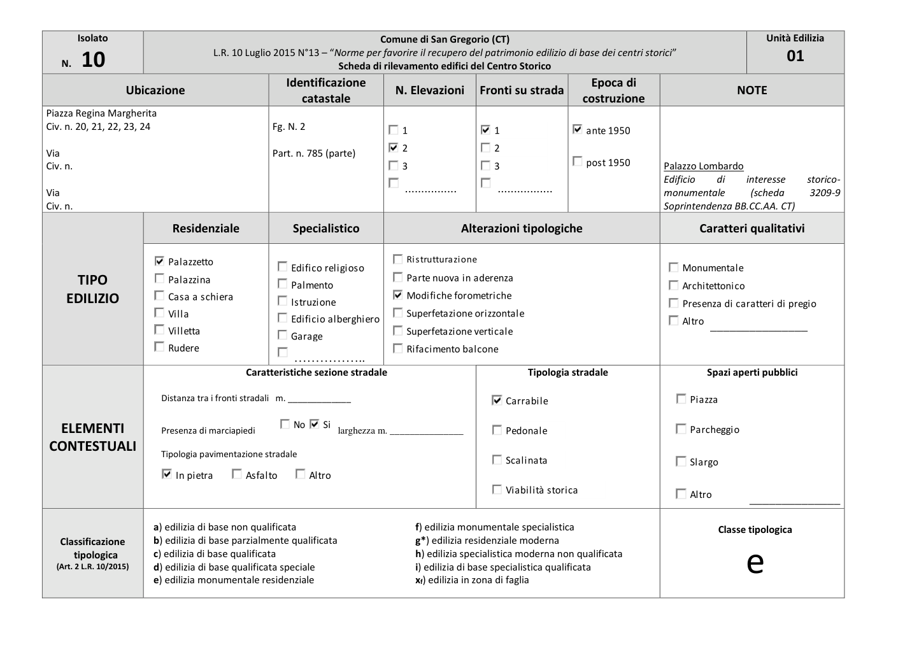
Comune di San Gregorio di Catania · Studio di dettaglio, schede isolato 10, p. 6. La classificazione tipologica è “e”.
La scheda rileva due elevazioni, un fronte su strada, edificio ante 1950 e modifiche forometriche. Non estende automaticamente la stessa classe a ogni porzione della particella.
Interesse storico-monumentale
La scheda chiama il fabbricato Palazzo Lombardo e richiama la scheda 3209-9 della Soprintendenza BB.CC.AA. di Catania. La fotografia comunale della pagina seguente coincide con il fronte della foto F02. Questo riscontro è più specifico della casella storica “NO” nel DOCFA.
Cosa permette di leggere l’abaco
Nella tavola comunale 10, riga e (edilizia monumentale residenziale), sono segnate manutenzione ordinaria, straordinaria e restauro/risanamento conservativo. Non è segnata la ristrutturazione edilizia. La lettura non equivale a un decreto di vincolo diretto né a un parere sul singolo lavoro.
Questo è il vero filtro delle cinque proposte: una nuova copertura sul terrazzo o un impalcato possono risultare incompatibili anche se rispettano parametri dimensionali. Sovrapporre UE, terrazzo e C/6; acquisire scheda 3209-9, atti di tutela e disciplina vigente. Prima di impegnare l’acquisto, far valutare i due interventi dal SUE e, per competenza, dalla Soprintendenza.
ARCHAI / CASATATOTATACASA MARGHERITA · SAN GREGORIO DI CATANIAR01
03 / LETTURA DELLE CARTE
Cosa dice il fascicolo
NCV364 ha 13 pagine: dieci schede descrittive e tre planimetrie. È la base geometrica più robusta disponibile, ma non certifica la regolarità edilizia.
Pagine
Lettura incrociata
1
D1: soppressione sub 5 e 7; costituzione 8, 9 e 10. Causali: ampliamento, diversa distribuzione interna, frazionamento e fusione. Data variazione dichiarata: 10.02.1942.
2–3
Fabbricato plurimo per destinazioni, con strutture verticali in muratura e copertura a tetto. Casella “NO” alla vecchia voce vincoli storico-artistici: non equivale a una verifica odierna.
4–5
Sub 8: tre vani principali, 81 m² utili; bagno 4 m²; tre accessori diretti 27 m². Totale utile dichiarato: 112 m². Lordo principale + accessori 159 m²; balconi/terrazzi lordi 25 m². Altezza media 4,20 m.
6–9
Sub 9 bottega con accessori; sub 10 box: 66 m² lordi / 52 m² utili e altezza media 4,35 m. La scheda del box non assegna superficie a un livello superiore.
10–13
Riepilogo poligoni, poi pianta sub 8 (p.11), bottega sub 9 (p.12), garage sub 10 (p.13). Le tavole indicano scala originale 1:200.
165, 167, 159 e 112 m² non sono quattro case diverse
165 è il dato di vendita; 167 la superficie catastale proposta; 159 il lordo dei locali interni nella scheda; 112 il totale utile dichiarato. I 25 m² esterni comprendono balcone e terrazzo insieme. Per materiali e arredi si misurano i singoli vani.
Una pratica da acquisire integralmente
Nel cartiglio della pianta numero e data di protocollo non sono compilati. L’impronta di stampa 10.07.2026 non prova avvenuta registrazione. Richiedere visura storica e attuale, ricevuta DOCFA, atti abilitativi, eventuali sanatorie e agibilità.
Dove lo schema inviato è utile
Photo 2 esprime bene il programma desiderato: due bagni, zona giorno congiunta e due camere. Il DOCFA riporta invece un solo W.C., un ingresso e due RIP.; non compare un secondo bagno comune nel centro. Lo schema rettangolare trascura il cuneo di facciata e semplifica i passaggi. Lo tratto come brief, non come prova.
ARCHAI / CASATATOTATACASA MARGHERITA · SAN GREGORIO DI CATANIAR02
03 / PIANTA DEL PRIMO PIANO
Stato attuale documentabile
A sinistra l’estratto originale; al centro la restituzione vettoriale. I numeri identificano gli stessi ambienti anche nei cinque progetti.
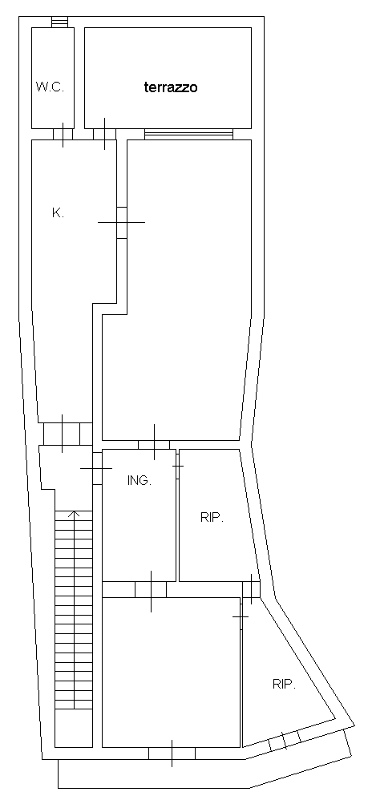
Estratto NCV364 p. 11. La scala originale non si conserva su schermo.
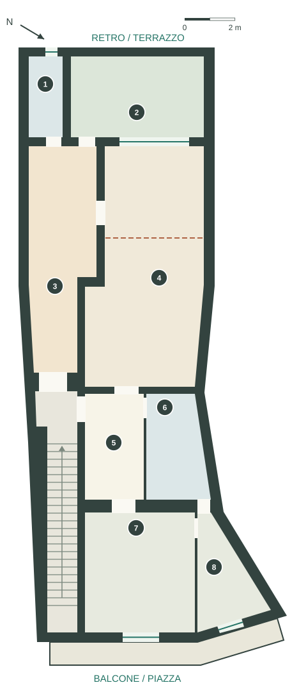
Muri e varchi dalla carta; tratto ruggine = quinta vetrata osservata, posizione indicativa.
N.
Vano
m²¹
1
W.C. sul retro
4,3
2
Terrazzo aperto
16,9
3
Cucina K, a gomito
20,9
4
Grande vano retrostante
39,9
5
Ingresso, non bagno
9,8
6
Ripostiglio intermedio
9,4
7
Vano grande sulla piazza
20,8
8
Ripostiglio a cuneo
8,0
¹ Stime grafiche al netto dei muri, arrotondate. Non comprendono scala, balcone o varchi. Dalla pagina A4, immagine 1654 px e scala 1:200: circa 2,54 cm/px. Da non usare per ordinare elementi su misura.
Lettura chiave: dalla scala si entra nell’ING.; il ramo verso K è segnato separatamente. Dal vano 5 si raggiungono 4, 6 e 7. Verso 8 compaiono varchi da 6 e da 7. Verificare sul posto versi di apertura e passaggi oggi praticabili.
ARCHAI / CASATATOTATACASA MARGHERITA · SAN GREGORIO DI CATANIAR03
03 / RISCONTRO FOTOGRAFICO
Le fotografie, stanza per stanza
Numerazione F01–F15 nell’ordine della galleria RE/MAX. Le foto sono indizi di continuità spaziale; non sostituiscono misure.
F02 · Fronte curvo; balconi, portali e cornice.
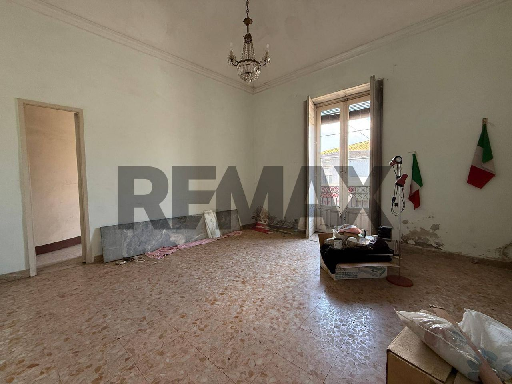
F05–06 · Stanza ampia con portafinestra.
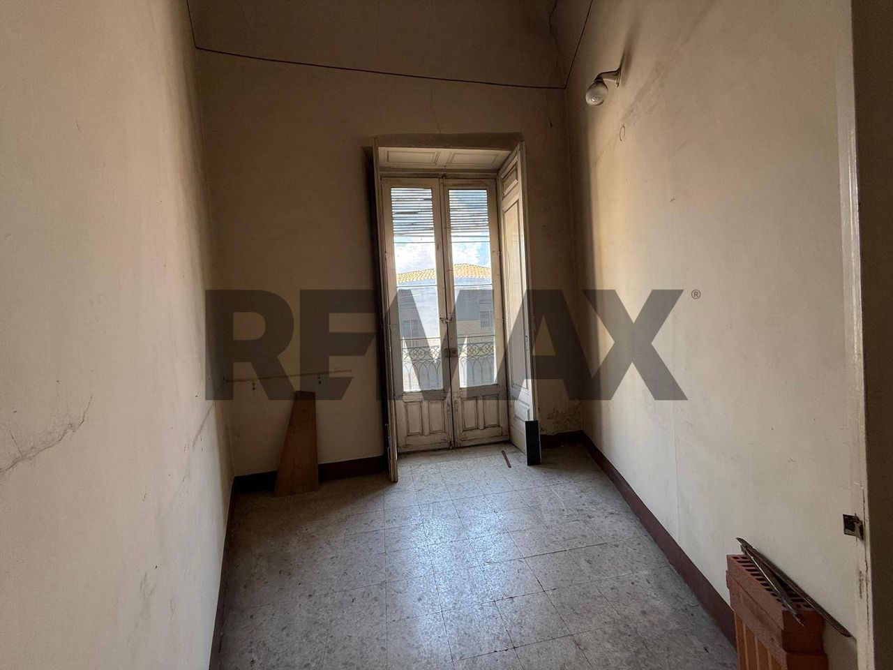
F07–08 · Vano stretto con affaccio frontale.
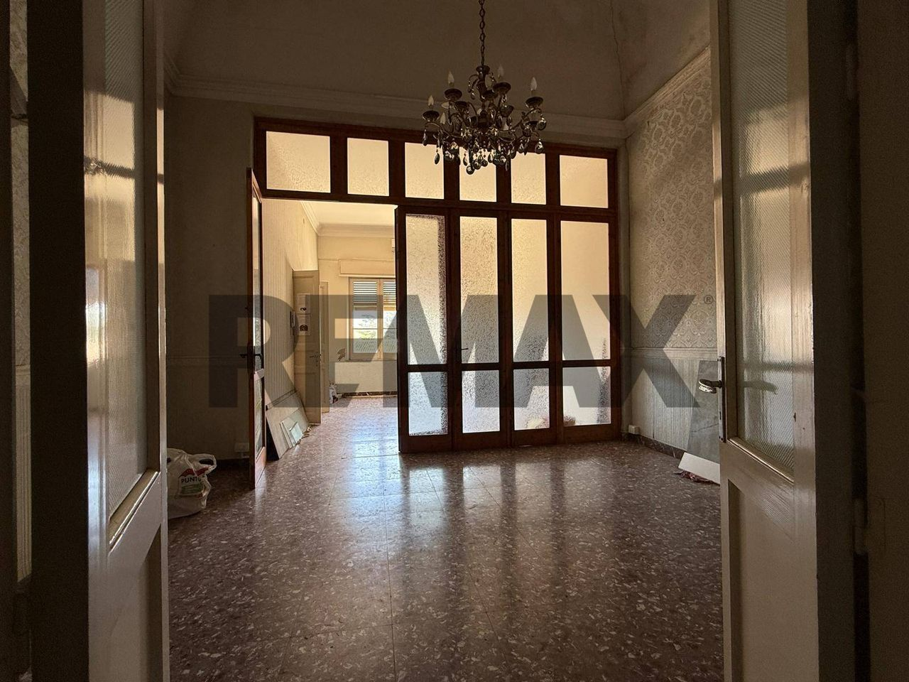
F09 · Asse di porte e partizione vetrata.
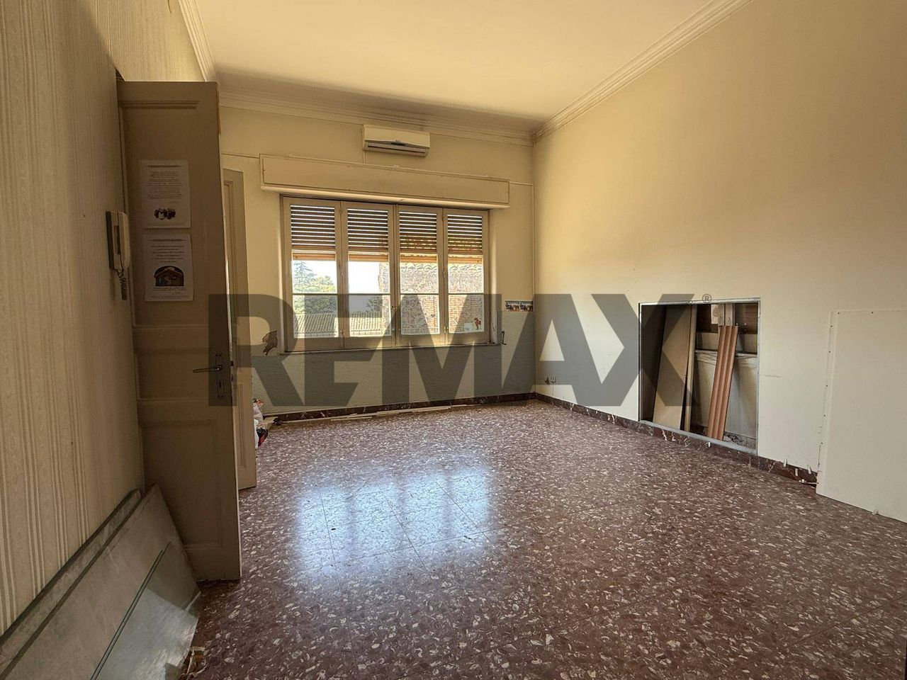
F01/10/11 · Finestra ampia, pavimento a scaglie.
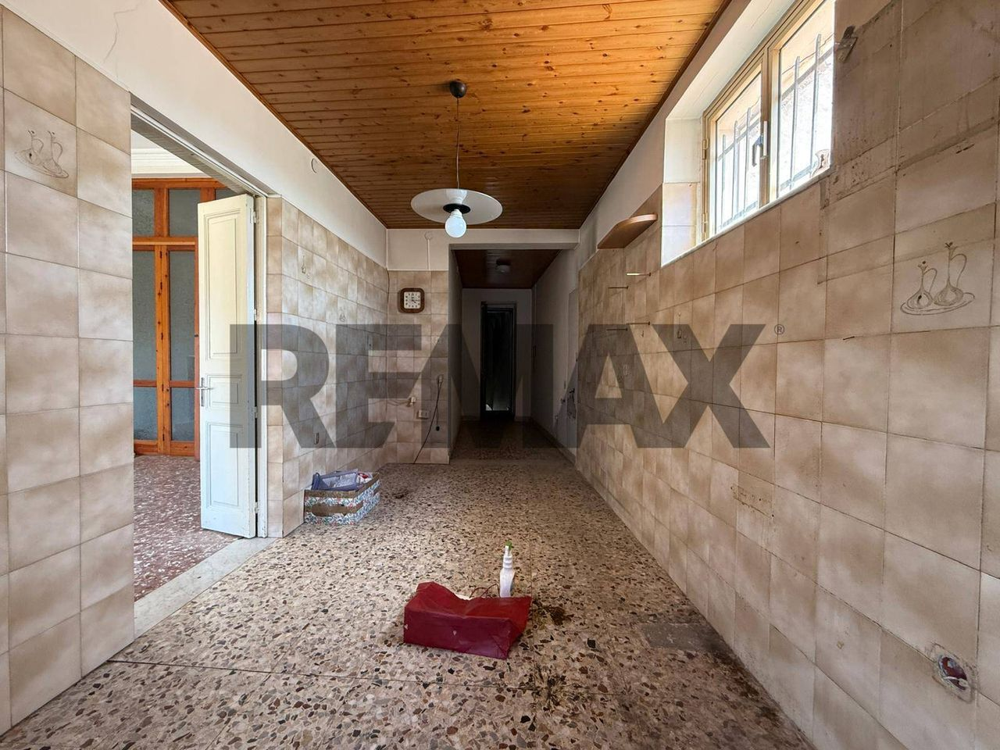
F12 · Vano rivestito, aperture alte, soffitto ligneo a vista.
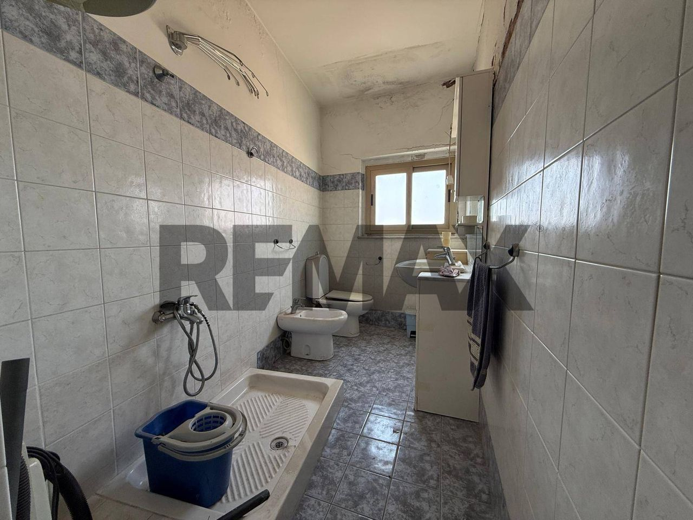
F13 · Bagno rivestito, sanitari e finestra di fondo.
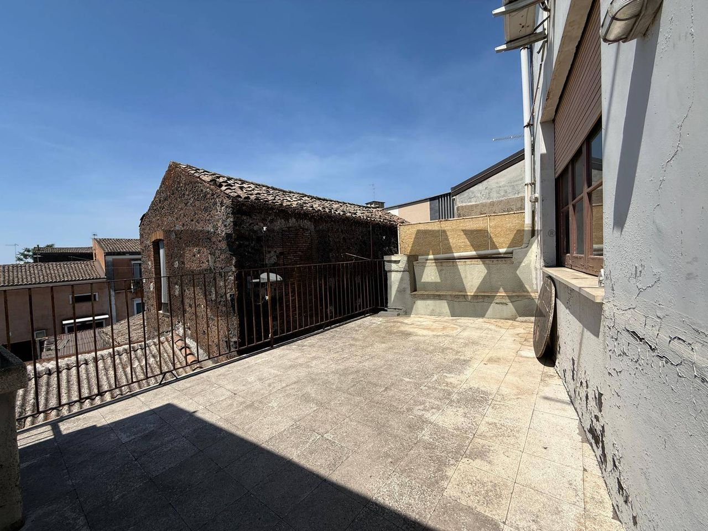
F14–15 · Terrazzo: fronte finestrato e tetti ravvicinati.
Da conservare dopo saggio: pavimenti a scaglie e fascia perimetrale, alta quinta vetrata in legno, proporzioni delle portefinestre. Distinguere luce netta e sopraluce.
Da ispezionare: F03 mostra una copertura ondulata vicina, di materiale e proprietà non identificati. F04 mostra un passaggio profondo. Non attribuisco materiali, epoche o portanza dalla sola immagine.
ARCHAI / CASATATOTATACASA MARGHERITA · SAN GREGORIO DI CATANIAR04
03 / RISCONTRO FILMATO
Il percorso della visita
Due video della cartella CASATATOTATA: 68,7 s nell’appartamento e 23,8 s nel locale al piano terra. Fotogrammi con luminosità corretta per la lettura.
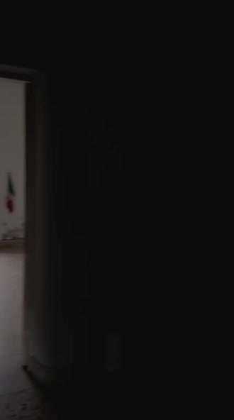
V1 · 00:07 / Vano sul fronte
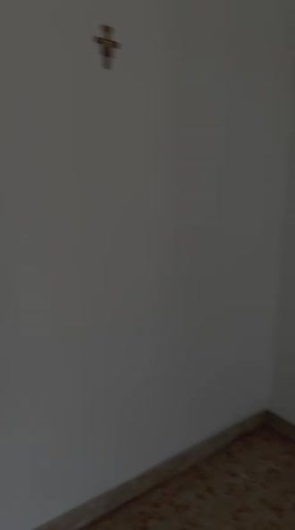
V1 · 00:15 / Seconda portafinestra
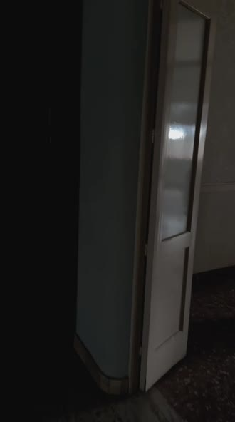
V1 · 00:27 / Quinta vetrata
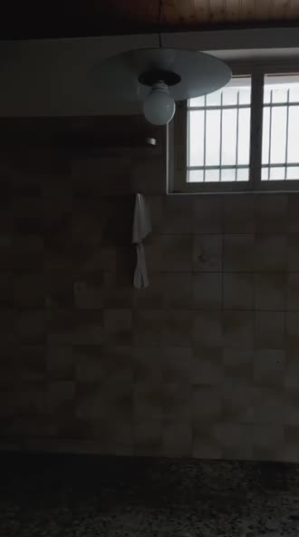
V1 · 00:40 / Fascia rivestita
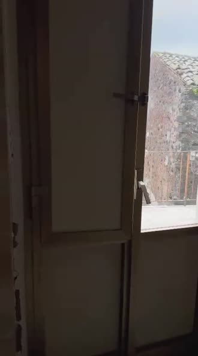
V1 · 01:00 / W.C. di fondo
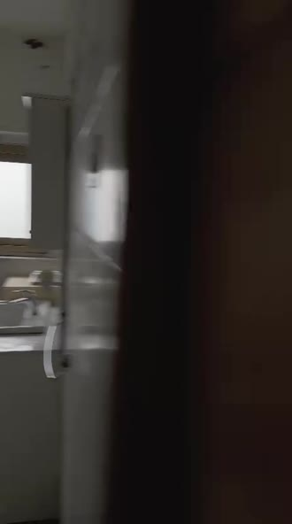
V1 · 01:04 / Terrazzo
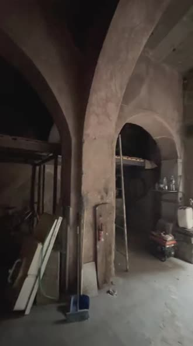
V2 · 00:05 / Sostegno e archi
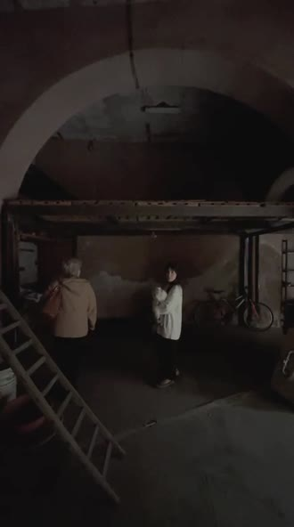
V2 · 00:16 / Porta sul vicolo
V1 · dalla piazza al terrazzo
00:00–00:24: stanze frontali e passaggi successivi; 00:24–00:39: quinta in legno e vetro e finestra larga; 00:40–01:04: vano con rivestimenti, varco del bagno, sanitari e uscita all’aperto. L’accostamento F09–F13 rafforza il legame fra questi ambienti. Non emerge un secondo bagno certo.
V2 · il livello basso
00:00–00:10: archi, piedritto e piano alto con elementi orizzontali; 00:10–00:19: luce dall’apertura carrabile e rapporto con il vicolo. L’audio non fornisce misure affidabili. Non si distingue se il piano sia un deposito fisso o un allestimento; non lo includo fra le superfici autorizzate.
Rilievo ancora necessario: assegnare ogni foto a un punto di ripresa su pianta, misurare il profilo di ogni volta e disegnare l’alzato della vetrata. Nessun fermo immagine giustifica una quota al centimetro.
ARCHAI / CASATATOTATACASA MARGHERITA · SAN GREGORIO DI CATANIAP01
04 / CINQUE MODI DI ABITARE · PROPOSTA 01
Conservare la sequenza
Una casa per due, con una sala da pranzo che in inverno si affaccia sul verde.
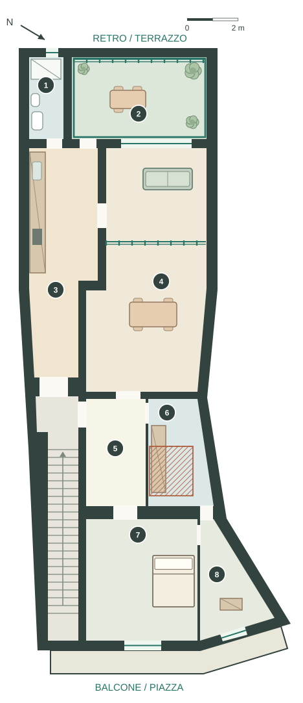
Pianta arredata · riferimenti 1–8 in R02.
Spaccato assonometrico schematico. Pareti sezionate basse; quota, profilo e montanti della serra sono di progetto.Giardino integrale* · 1 camera · 1 bagno
Volume alto. Giardino chiuso stagionale con tavolino, due sedie e tre gruppi di vasi. Una bauliera alta sul retro del 6, circa 3,3 m² in proiezione, libera il pavimento; presa dal fronte, senza salirvi.
Piano terra. Garage: una vettura, scaffale basso e spazio bici.
Distribuzione e percorsi
La zona giorno resta nel grande vano 4. La quinta vetrata divide conversazione e pranzo senza interrompere la luce. Nella cucina 3 si lavora sulla parete lunga, lasciando libero il percorso fra la scala, il bagno e il giardino.
Stanze e servizi
Una camera permanente nel vano 7; guardaroba e scrittoio d’appoggio nell’8. Il 6 diventa lavanderia e deposito. Si rinnova il solo bagno 1; studiare un filtro se l’accesso dalla cucina non rispetta i requisiti.
Materia e dettaglio
Recupero della quinta lignea, oliatura a campione e integrazioni in castagno; graniglia levigata soltanto dopo prova. Niente nuovi attraversamenti nel muro verso la piazza.
Minore impatto distributivo. Il bagno è lontano dalla camera; il secondo letto rimane eventuale e non costituisce una seconda camera.
* Ammissibilità: A04 e D01. Lavori casa: € 82–140 mila, al netto di IVA e somme accessorie (E02).
ARCHAI / CASATATOTATACASA MARGHERITA · SAN GREGORIO DI CATANIAP02
04 / CINQUE MODI DI ABITARE · PROPOSTA 02
Due camere sulla piazza
La proposta per una famiglia: due camere con affaccio reale e un giorno intero verso il terrazzo.
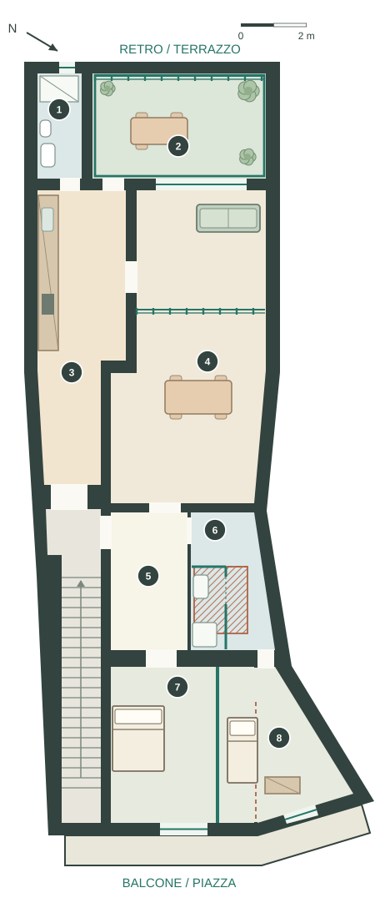
Pianta arredata · riferimenti 1–8 in R02.
Spaccato assonometrico schematico. Pareti sezionate basse; quota, profilo e montanti della serra sono di progetto.Giardino integrale* · 2 camere proposte · 2 servizi
Volume alto. Giardino chiuso con tavolo per i compiti e panca sul lato cieco. Volume alto sopra parte del nucleo 6 per biancheria / valigie, circa 3 m²; ispezione dal filtro. Nessun letto è previsto in quota.
Piano terra. Garage: auto e due bici con spazio per passeggino.
Distribuzione e percorsi
Tra 7 e 8 il divisorio viene traslato verso il vano grande di circa 1,15 m; si chiude il collegamento diretto fra camere. Dai poligoni risultano circa 15 e 13 m² grafici. Entrambe mantengono l’apertura sul balcone; nessuna camera apre attraverso il giardino chiuso.
Stanze e servizi
Il 5 distribuisce la matrimoniale e il 6. In quest’ultimo un passaggio indipendente sul lato obliquo porta alla seconda camera senza attraversare il nuovo servizio. Bagno 1 di famiglia; nel 6 un secondo servizio compatto con estrazione da verificare.
Materia e dettaglio
Divisorio nuovo leggero e isolato acusticamente; testata su parete piena per non coprire le portefinestre. Misurare il tratto più stretto del disimpegno con ante aperte.
Condizioni decisive: parete 7/8 trasformabile, luce e aerazione di entrambe le camere, scarico del secondo bagno. Se il muro è portante, sospendere questa versione e sviluppare P01.
* Ammissibilità: A04 e D01. Lavori casa: € 104–181 mila, al netto di IVA e somme accessorie (E02).
ARCHAI / CASATATOTATACASA MARGHERITA · SAN GREGORIO DI CATANIAP03
04 / CINQUE MODI DI ABITARE · PROPOSTA 03
Atelier dietro il vetro
Una postazione per due si chiude davvero, senza sacrificare la camera né portare clienti nella zona notte.
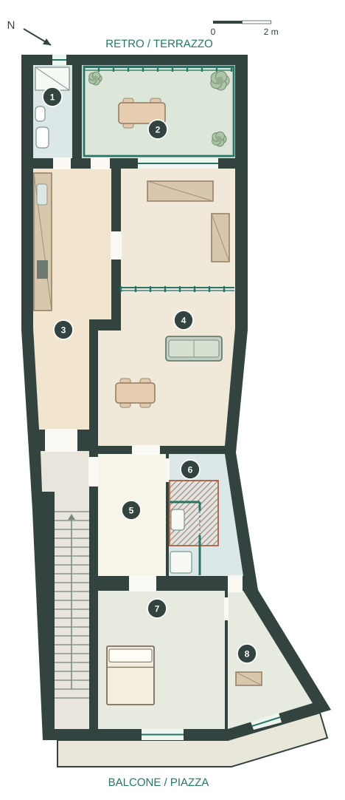
Pianta arredata · riferimenti 1–8 in R02.
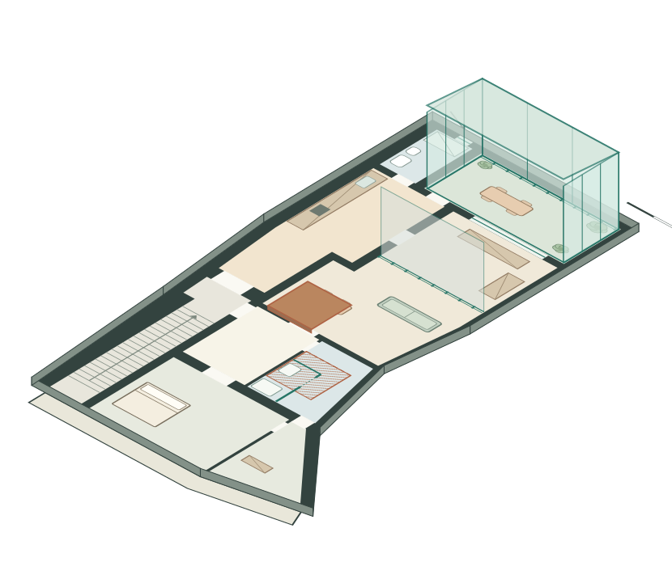
Spaccato assonometrico schematico. Pareti sezionate basse; quota, profilo e montanti della serra sono di progetto.Giardino integrale* · 1 camera · atelier separabile
Volume alto. Giardino chiuso come pausa verde, separato dalla scrivania per controllare riverbero e abbagliamento. Archivio alto nel 6, circa 3,5 m²; prevedere moduli estraibili. Eventuale passerella solo dopo verifica della sezione e degli appoggi.
Piano terra. Garage: una vettura, bici e armadio chiuso per campioni domestici.
Distribuzione e percorsi
Il vano 4 accoglie un atelier sul lato del giardino e la sala domestica verso l’ingresso. Una chiusura acustica trasparente sostituisce o integra la quinta esistente solo dopo rilievo del serramento. Ingresso–sala–atelier è il percorso di lavoro.
Stanze e servizi
La cucina resta nel 3; il bagno 1 e il secondo servizio nel 6 servono due ritmi diversi. Il 7 resta camera, l’8 è archivio basso e postazione breve. Non si assegna a un ripostiglio interno lo status di studio abitabile.
Materia e dettaglio
Tavoli staccati dal vetro, prese dati su spina a pavimento reversibile, fondale opaco per le videochiamate. Tenda tessile fonoassorbente sul lato interno; oscurante esterno sul vetro soleggiato.
Funziona se il locale di lavoro mantiene luce e aria dirette sufficienti dopo la chiusura del terrazzo. In caso contrario: atelier nel vano 7 solo cambiando anche il programma notte, oppure postazioni aperte nella sala.
* Ammissibilità: A04 e D01. Lavori casa: € 97–165 mila, al netto di IVA e somme accessorie (E02).
ARCHAI / CASATATOTATACASA MARGHERITA · SAN GREGORIO DI CATANIAP04
04 / CINQUE MODI DI ABITARE · PROPOSTA 04
La cucina degli ospiti
Il tavolo diventa il centro della casa. Il progetto serve chi cucina insieme e riceve spesso.
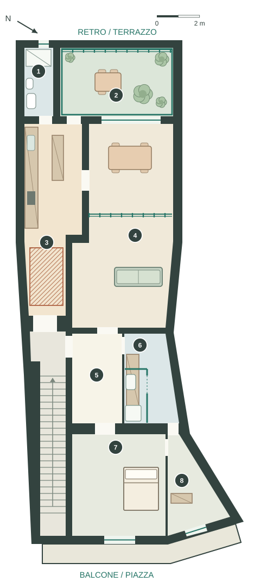
Pianta arredata · riferimenti 1–8 in R02.
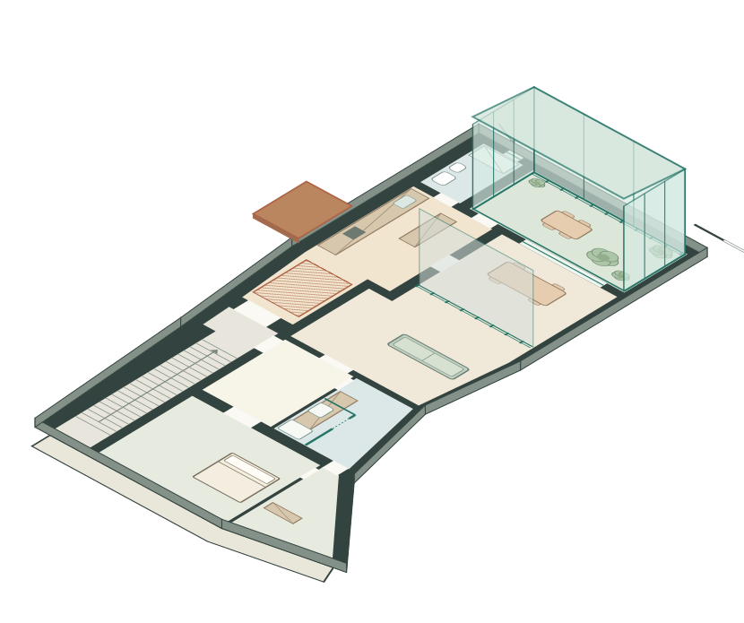
Spaccato assonometrico schematico. Pareti sezionate basse; quota, profilo e montanti della serra sono di progetto.Giardino integrale* · 1 camera · grande pranzo
Volume alto. Giardino chiuso con aromatiche in contenitori bassi, vasi ombreggiabili e tavolino. Nel tratto finale del 3 una dispensa sospesa di circa 4,2 m² in proiezione; accesso dal basso con ferramenta estraibile, lontano dai fuochi.
Piano terra. Garage: spesa e cassette su rastrelliera pulibile, senza deposito alimentare permanente.
Distribuzione e percorsi
Nel 3 due fronti di lavoro brevi lasciano il passaggio continuo; il secondo banco si accorcia se la luce fra i fronti non basta. Il pranzo sta nella parte finestrata del 4: tavolo allungabile, sedute sui lati lunghi, servizio dalla cucina attraverso il varco esistente.
Stanze e servizi
Il soggiorno è raccolto vicino al 5 e separabile dal pranzo. Il 7 rimane camera; il vano 8 diventa cabina. Nel 6: servizio ospiti con aspirazione da verificare. Niente cottura o adduzione gas nel giardino.
Materia e dettaglio
Piano in pietra lavica lavorata opaca, frontali lavabili color salvia, lampada sul tavolo ancorata a supporti verificati. Tenere ispezionabile il percorso della cappa senza tagliare la volta.
Più costosa e intensiva sugli impianti; la cucina richiede verifica di estrazione e potenza elettrica. Se manca la distanza utile, eliminare il secondo banco e mantenere il tavolo nel 4.
* Ammissibilità: A04 e D01. Lavori casa: € 105–185 mila, al netto di IVA e somme accessorie (E02).
ARCHAI / CASATATOTATACASA MARGHERITA · SAN GREGORIO DI CATANIAP05
04 / CINQUE MODI DI ABITARE · PROPOSTA 05
Il salotto sulla piazza
La variante che inverte giorno e notte, per vivere il balcone e dormire sul lato più raccolto.
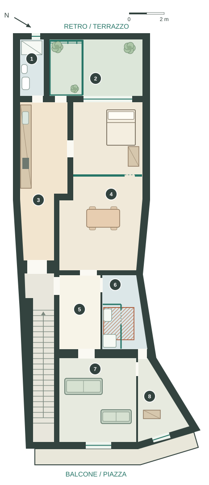
Pianta arredata · riferimenti 1–8 in R02.
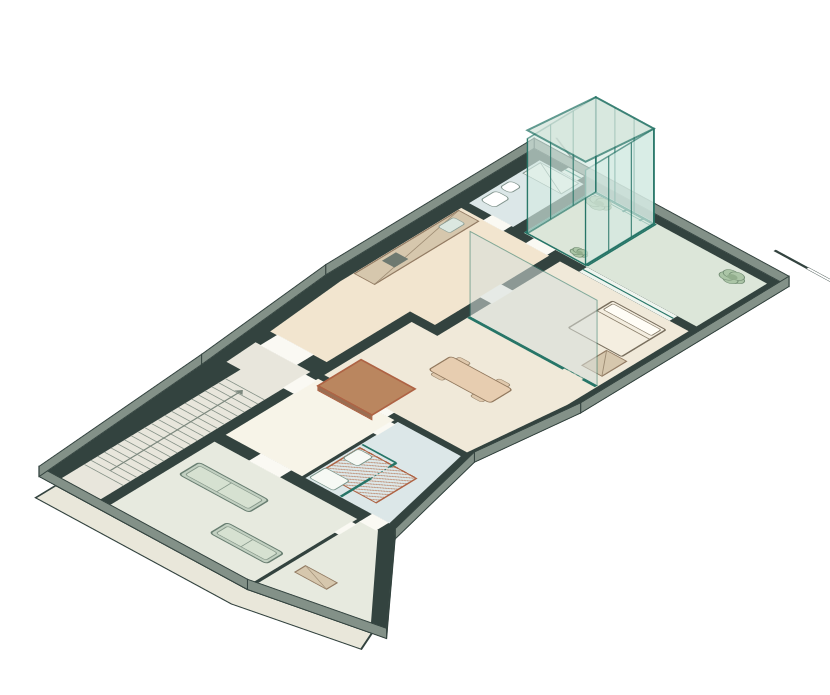
Spaccato assonometrico schematico. Pareti sezionate basse; quota, profilo e montanti della serra sono di progetto.Giardino parziale* · 1 camera sul retro · 2 servizi
Volume alto. Il giardino chiuso interessa SOLO la fascia a lato dell’uscita dalla cucina: circa 6 m² grafici. Davanti alla finestra della camera resta cielo libero. Se la famiglia richiede la chiusura integrale, scegliere P01–P04 e scartare questa inversione.
Piano terra. Garage: attrezzatura stagionale e ciclofficina domestica sul lato opposto alla manovra.
Distribuzione e percorsi
Il 7 diventa soggiorno sulla piazza, con la nicchia 8 per libri e musica. Nel 4 si separa una camera verso la finestra posteriore; una porta da pranzo/disimpegno ne rende l’accesso indipendente. La cucina resta vicina al tavolo nel tratto interno.
Stanze e servizi
Il secondo servizio resta nel 6, senza perdere il ripostiglio alto; il W.C. 1 è il bagno più vicino alla nuova camera. Verificare rumore del retro e assenza di affacci pregiudizievoli prima di fissare il letto.
Materia e dettaglio
Spazio alto di circa 3 m² nel 6 per attrezzature stagionali, con sportelli sul filtro. Libreria bassa e due sedute mobili nel salotto; parete acustica della camera smontabile. Nessuna unità di climatizzazione sul balcone di rappresentanza.
La fascia aperta deve restare legalmente e fisicamente sufficiente per luce, aria, manutenzione e privacy della camera. Il pranzo centrale richiede verifica dei rapporti aeroilluminanti.
* Ammissibilità: A04 e D01. Lavori casa: € 97–169 mila, al netto di IVA e somme accessorie (E02).
ARCHAI / CASATATOTATACASA MARGHERITA · SAN GREGORIO DI CATANIAD01
05 / DETTAGLI TRASVERSALI
Il giardino d’inverno
Progetto preferito: ambiente stagionale chiuso, separabile dalla casa, senza riscaldamento dedicato. La qualificazione edilizia dipende dalle opere e dall’uso effettivo.
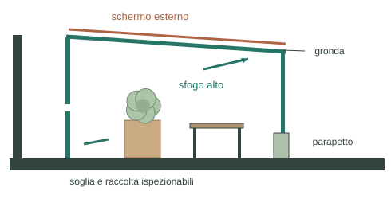
Sezione concettuale: sinistra = casa; destra = bordo esterno. Geometria del parapetto, pendenza e appoggi da rilevare.
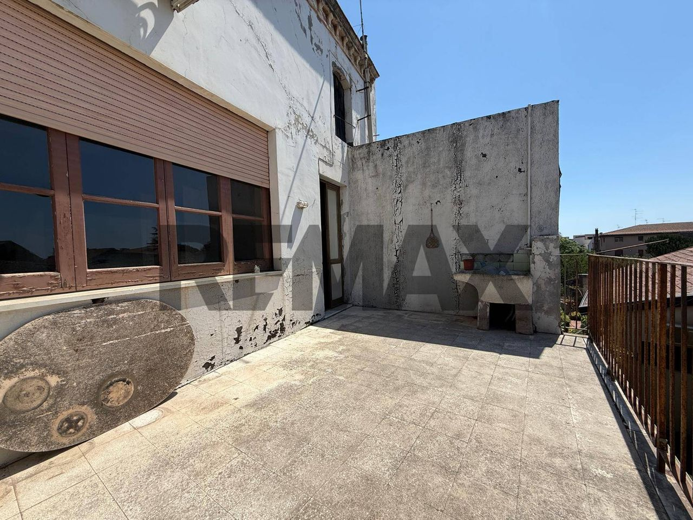
F15 · Parete finestrata, parapetto e muro terminale esistenti. Non addossare la nuova struttura senza verifica.
Prestazione prima della forma
Mantenere il serramento tra vano 4 e terrazzo; verificare dove si passa davvero dal vano 3. Copertura leggera con schermatura esterna retrattile, parti apribili alte e basse su lati diversi, scarichi con troppo pieno e ispezione. Vetri di sicurezza e dimensionamento a vento da progettare; nessun ancoraggio sul solo parapetto.
Superficie e uso cambiano il titolo
Il REC comunale pubblicato nel 2023, art. 86, prevede per le serre passive condizioni cumulative, fra cui area netta ≤15% della superficie utile e prestazione invernale. Con 112 m² indicativi il 15% vale 16,8 m²: 12/112 ≈ 10,7%; 16,9/112 ≈ 15,1%. Uno scarto grafico potrebbe cambiare esito; né il numeratore né il denominatore sono qui asseverati.
Orientamento e requisiti
Nel testo consultato il risparmio richiesto è ≥10%, salvo il caso specifico di ristrutturazione di oltre il 25% della superficie disperdente dell’intero edificio. Fuori da ±45° dal sud è richiesto dettaglio digitale del calcolo. Installare riscaldamento/raffrescamento incide sul computo della superficie. Per una veranda ordinaria verificare separatamente art. 95, disciplina regionale, vincoli e titoli.
Se la serra non è ammessa: chiedere la fattibilità di una veranda con titolo appropriato. Se nessuna chiusura è consentita, vasi, sedute e ombra mobile sul terrazzo aperto sono la variante di riserva, senza inventare superficie interna.
ARCHAI / CASATATOTATACASA MARGHERITA · SAN GREGORIO DI CATANIAD02
05 / DETTAGLI TRASVERSALI
Quanto spazio c’è sopra?
4,20 m è l’altezza media catastale dell’abitazione. Non è la luce libera disponibile in ciascun punto di una volta.
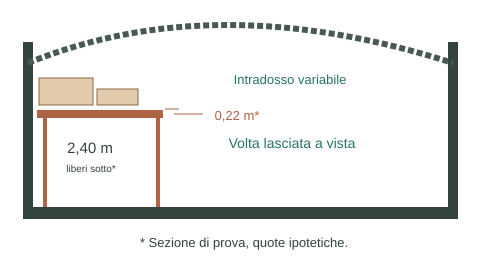
Sezione di prova, non rilievo: centro e imposte della volta non sono quotati. Le misure servono a scartare ipotesi troppo ambiziose.
Altezza locale di prova
Sotto + pacchetto
Residuo sopra
4,20 m (solo esempio)
2,40 + 0,22 m
1,58 m
3,80 m vicino al fianco*
2,40 + 0,22 m
1,18 m
4,60 m in chiave*
2,40 + 0,22 m
1,98 m
* Quote di sensibilità, non misurate. Non sono soglie di agibilità. Il punto più basso può governare la fattibilità.
A · Mobile alto, senza accesso di persone
Prima scelta nei vani di servizio. Ripiani e moduli estraibili a piena profondità liberano la stanza; fissaggi, ribaltamento e portata dei carichi vanno progettati. La superficie indicata nelle P è l’ingombro, non metratura abitabile.
B · Soppalco praticabile per deposito
Opzione condizionata sopra il 6 (in P04 sopra una parte del 3). Verificare altezza su pianta quotata, uso legittimo, superficie ammessa, scala reale con sbarco e protezione, carichi, incendio e manutenzione. Se la scala o gli appoggi cancellano il guadagno, scegliere A. Nessuna scala fissa o letto è contabilizzato come già assentito.
C · Un secondo livello abitabile
Non emerge dimostrato dalle carte. Prima di progettare studio o letto in quota servono sezioni trasversali e longitudinali in ogni vano, aerazione, luce utile, requisiti locali, parapetti e verifica strutturale/sismica. L’art. 95 c.12 del REC non trasforma 4,20 m in un via libera.
Ipotesi costruttiva: telaio leggero indipendente o appoggi su muratura verificata, carichi tracciati fino agli appoggi inferiori. Non usare l’intradosso della volta come supporto. La scelta acciaio/legno e ogni sezione resistente spettano al calcolo.
ARCHAI / CASATATOTATACASA MARGHERITA · SAN GREGORIO DI CATANIAD03
05 / DETTAGLI TRASVERSALI
Un capitolato per la prima visita
Prima di scegliere rivestimenti nuovi, distinguere ciò che merita restauro da ciò che richiede bonifica, sostituzione o semplice manutenzione.
Pavimenti e soglie
Mappare tipi, crepe, piastrelle sonore a vuoto e dislivelli. Conservare una campionatura per stanza; prova di pulitura su 0,5 m² in zona nascosta. Evitare levigatura uniforme aggressiva su finiture differenti.
Serramenti e acustica
Numerare ante, ferramenta, sopraluci, oscuranti e cassette. Valutare guarnizioni e secondo serramento interno sul fronte prima della sostituzione. Misurare profondità dei vani e compatibilità con le ante del balcone.
Pietra e colore
Tre campioni reali: bianco calce caldo accanto all’intonaco esistente, castagno medio vicino alla quinta, pietra lavica opaca in zona di lavoro. Osservarli nelle due esposizioni prima di fissare tinta o finitura.
Acqua e impianti
Tracciare scarico W.C., ventilazione colonne e punto di recapito. Prima del bagno 6 verificare pendenza disponibile senza tagliare solai o attraversare proprietà altrui; fare videoispezione. Impianto elettrico per zone, circuiti cucina distinti, punti luce bassi per non forare le volte.
Comfort estivo
Studiare schermature esterne, ventilazione notturna compatibile con rumore e sicurezza, ventilazione di bagni e ripostigli. Calcolare carichi dopo il rilievo degli infissi; cercare posizione autorizzabile di macchine e condense fuori dal fronte storico.
Acqua sul terrazzo
Rilievo con laser di pendenze, risvolti, soglie, pluviali e troppo pieno. Prova di tenuta concordata dopo controllo degli ambienti sottostanti. Fissare le fioriere al progetto dei carichi: terriccio saturo e acqua trattenuta pesano.
Sequenza di cantiere: 1 proteggere elementi recuperabili → 2 saggi e tracciamento → 3 strutture e tenuta all’acqua → 4 reti e collaudi prima di chiudere → 5 finiture, arredi e verifiche finali.
ARCHAI / CASATATOTATACASA MARGHERITA · SAN GREGORIO DI CATANIAD04
05 / ABITARE IL TERRAZZO
Una stanza tra i tetti
Vista di intenzione del giardino completo. Colori, arredi, altezza e geometria della copertura sono proposte, non un fotoinserimento né una sagoma assentita.
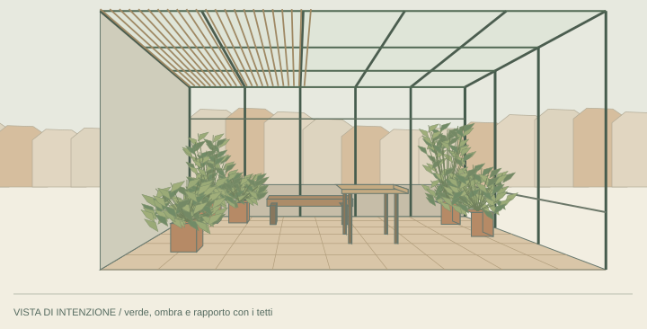
Studio prospettico dalla soglia: schermatura a fasce sul tetto, pannelli alti apribili, vasi mobili e panca staccata dai montanti.
Mattina e inverno
Tenere separabile il volume dal soggiorno. Scegliere un tavolo che due persone possano spostare; concentrare il verde sui lati per non chiudere l’asse visivo della finestra e l’accesso dalla cucina.
Luglio, nel pomeriggio
Ombra esterna prima che il sole raggiunga il vetro; ingresso d’aria in basso e sfogo in alto. Prevedere anche uno schermo verticale removibile sul lato radente. Altezza e ritmo dei montanti si fissano dopo il confronto con la facciata storica.
ARCHAI / CASATATOTATACASA MARGHERITA · SAN GREGORIO DI CATANIAD05
05 / APPROFONDIMENTO P02
La prova delle due camere
Ingrandimento del fronte di P02: il muro nuovo deve cadere sul pieno tra le aperture, preservando il balcone e due percorsi leggibili.
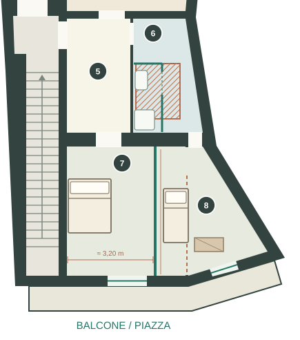
Dettaglio P02 · linea tratteggiata = vecchio divisorio; verde = nuova separazione. Le dimensioni sono stime grafiche di progetto.
Spazio
Obiettivo da verificare sul rilievo
Camera 7
Circa 3,20 × 4,75 m; letto 160 × 200 cm. Conservare spazio per aprire le ante del balcone e per il passaggio ai lati.
Camera 8
Singolo 90 × 200 cm nella fascia larga del nuovo vano; scrittoio nel cuneo verso il balcone. Verificare profondità del mobile e altezza davanzale.
Accessi
Scala → ingresso 5 → porta camera 7. Per la camera 8: ingresso 5 → filtro nel 6 → apertura al fronte. Il nuovo bagno si apre sul filtro.
Filtro e servizio
Fascia di passaggio obiettivo 90 cm netti, da controllare con arredi e ante; per il WC testare ingombri dei sanitari, doccia e ventilazione meccanica. Non è verificata la visitabilità.
Prima quota da prendere: distanza fra le spallette interne delle due portefinestre. Poi asse, spessore e appoggi del muro 7/8. Se non si può spostare, la superficie teorica della seconda camera non esiste.
ARCHAI / CASATATOTATACASA MARGHERITA · SAN GREGORIO DI CATANIAG01
06 / IL GARAGE · STATO ATTUALE
Una stanza di archi sul vicolo
C/6, foglio 2 particella 785 sub 10. Il negozio tratteggiato sotto nella tavola originale appartiene al sub 9.
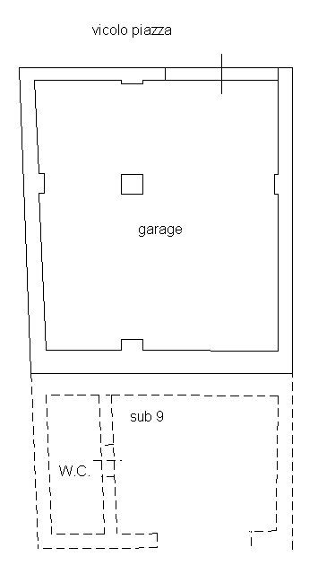
NCV364 p. 13. Pianta al piano terra, Vico Piazza s.n.
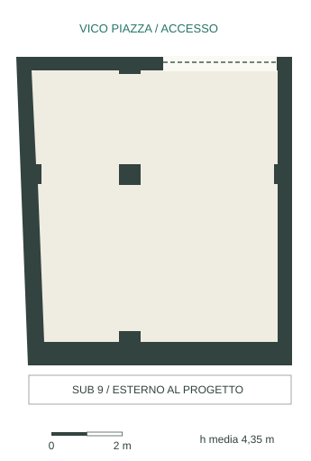
Ridisegno. Apertura verso il vicolo, sostegno isolato e risalti perimetrali ripresi dalla tavola.
Lettura dimensionale
Sulla carta: luce interna circa 6,6–6,9 × 7,6 m, portale disegnato intorno a 3,2 m e piedritto centrale circa 0,6 × 0,6 m. Sulla scheda: 52 m² utili, 66 lordi, h media 4,35 m. Il varco sulla carta non è la luce netta fra guide e serranda.
Lettura dal video
V2 mostra archi e una struttura alta, elementi assenti come livelli distinti sulla pianta. Non rimuovere impalcati, incatenamenti o tavolati prima di averne compreso funzione e appoggi. Verificare corrosione, distacchi, umidità alla base e ventilazione naturale.
V2 / 00:05 · Archi e piedritto.
ARCHAI / CASATATOTATACASA MARGHERITA · SAN GREGORIO DI CATANIAG02
06 / IL GARAGE · PROGETTO
Parcheggiare senza perdere il laboratorio
Un posto auto di progetto; la manovra dal vicolo e la larghezza tra stipiti e pilastro restano da provare con l’auto reale.
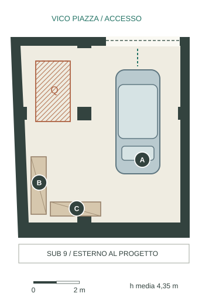
A vettura · B banco · C deposito · Q riserva in altezza. Piano alto esistente da verificare e non assunto come appoggio.
A · Manovra e apertura portiere
Ingombro vettura di prova circa 1,90 × 4,50 m. Ingresso dal portale spostato a destra; il pilastro ordina le corsie. Tracciare a terra anche specchi, apertura portiera e raggio di volta; fotografare il veicolo più grande previsto mentre entra dal vicolo.
B e C · Bici, banco e deposito
Banco profondo circa 60–65 cm lungo la parete lontana dalla manovra, carrelli mobili e armadio chiuso a fondo corsia. Bici sulle rastrelliere basse, accessibili anche con vettura parcheggiata. Prevedere protezioni reversibili del piedritto e illuminazione senza abbagliare chi entra.
Q · Altezza
Fascia alta dimostrativa di circa 4 m² laterale al percorso auto. Se il piano rialzato del video è assentito e verificato, valutarne il recupero; altrimenti fermarsi agli arredi bassi. Calcolare carichi deposito e urti; non caricare né puntellare le chiavi degli archi.
Impianti e uso
Pavimentazione pulibile e antiscivolo, impianto elettrico verificato, prese protette e ventilazione da dimensionare sull’intera autorimessa pertinente. Valutare ricarica elettrica solo dopo potenza, terra, protezioni e situazione antincendio dell’intero complesso.
Tre livelli di impegno
G-A · Pulitura, segnaletica, controlli e dotazioni mobili: € 4–8 mila. G-B · Come G-A con impianto, finiture localizzate, banco e ricovero bici: € 12–25 mila complessivi. G-C · Come G-B con nuovo deposito alto solo se ammesso: € 22–45 mila complessivi. Ipotesi, IVA e tecnici esclusi.
Uso proposto: autorimessa e attività domestiche accessorie compatibili. Non sono previsti camera, bagno, cucina, attività aperta al pubblico o collegamento privato con l’appartamento.
ARCHAI / CASATATOTATACASA MARGHERITA · SAN GREGORIO DI CATANIAE01
07 / CONFRONTO
Quale casa scegliere
La prima decisione è se serve una seconda camera stabile. La seconda è se il giardino deve coprire tutto il terrazzo. Queste risposte cambiano la pianta più della scelta dei materiali.
Proposta
Zona giorno / notte
Giardino e quota
Opera discriminante
Lavori casa¹
P01 · Sequenza
Soggiorno al retro, 1 camera sul balcone
Intero*; bauliera nel 6
Recuperare senza spostare muri
82–140 k€
P02 · Due camere
Soggiorno al retro, 2 camere sulla piazza
Intero*; deposito sul filtro
Spostare il divisorio 7/8 e ricavare due accessi
104–181 k€
P03 · Atelier
Ambiente di lavoro separabile, 1 camera
Intero*; archivio alto
Isolare acusticamente senza perdere luce
97–165 k€
P04 · Cucina
Pranzo per ospiti, lounge distinta, 1 camera
Intero*; dispensa alta
Verificare due fronti cucina, cappa e reti
105–185 k€
P05 · Piazza
Salotto sul balcone, camera al retro
Parziale*; 6 m² grafici chiusi
Conservare finestra su aria libera
97–169 k€
La mia scelta per voi
Porterei P02 alla prima visita con P01 accanto. La seconda camera si decide misurando le portefinestre e saggiando il muro: se regge la struttura o non si può modificare, P01 offre una casa completa senza contare su quel lavoro.
Il rischio comune
* Nessuna chiusura è acquisita. Se il giardino è inderogabile, e l’istruttoria lo esclude, le cinque piante non risolvono il vostro requisito: è un motivo concreto per riconsiderare l’acquisto. ¹ Budget indicativi, non offerte.
ARCHAI / CASATATOTATACASA MARGHERITA · SAN GREGORIO DI CATANIAE02
07 / QUADRO ECONOMICO
Quanto riservare ai lavori
Importi in migliaia di euro, novembre 2026. Intervalli di programmazione per confronto, IVA esclusa. Nessun prezzo è una quotazione di impresa.
Pacchetto · k€
P01
P02
P03
P04
P05
Base · protezioni, ripristini, finiture
28–43
33–52
29–45
30–49
33–52
Reti, bagno/i, clima di base
27–40
34–51
31–47
35–55
36–56
Giardino, tenuta e schermature*
18–36
18–36
18–36
18–36
12–24
Arredo alto / deposito semplice
4–9
5–12
5–12
5–12
4–10
Opere specifiche e falegnameria fissa
5–12
14–30
14–25
17–33
12–27
Totale lavori indicativo
82–140
104–181
97–165
105–185
97–169
Come leggere gli stanziamenti
La base incide su circa 112 m² utili documentari, con recupero selettivo anziché sostituzione integrale. Reti: bagno 1, dotazioni cucina, elettrico e comfort; P02–P05 includono il secondo servizio ipotizzato. Le somme specifiche coprono divisori, arredi fissi e la complessità di ciascuna variante.
Esempio di controllo unitario, prezzario Sicilia 2024 prorogato 2026, pag. stampata 584: SIC24_21.1.24, rimozione sanitari a 23,68 €/cad; 3 pezzi ipotetici = 71,04 €, esclusi trasporto e ripristini. Esempio già interno al pacchetto lavori: non si somma ai totali.
Perché il giardino ha una forbice ampia
* Chiusura su misura da dimensionare su 12–17 m² indicativi (P05 circa 6), con copertura, aperture, ombra e drenaggio. Chiedere tre offerte dopo aver definito il titolo e i carichi. La cifra della quota alta riguarda un deposito semplice; un soppalco strutturale praticabile richiede computo separato.
Esclusi: consolidamenti estesi, rifacimento tetto, bonifiche, guasti occulti, elevatore, restauro specialistico straordinario, cucina/elettrodomestici e mobili sciolti, tecnici, oneri, imposte e acquisto. Garage a parte (G02).
ARCHAI / CASATATOTATACASA MARGHERITA · SAN GREGORIO DI CATANIAE02b
07 / INVESTIMENTO COMPLESSIVO
L’esborso cambia con il garage
Una simulazione esplicita per P02. Sommare gli estremi serve a fissare un tetto di ricerca, non a prevedere il prezzo finale.
Voce
Solo casa
Con garage G-B
Richiesta acquisto
123.000 €
182.000 €
Lavori casa P02
104–181 mila €
104–181 mila €
Lavori garage
—
12–25 mila €
Totale acquisto + lavori
227–304 mila €
298–388 mila €
Riserva imprevisti¹
15,6–27,2 mila €
17,4–30,9 mila €
Accantonamento tecnici²
12,5–21,7 mila €
13,9–24,7 mila €
Parziale di pianificazione³
255–353 mila €
329–444 mila €
¹ Riserva · ipotesi 15%
Calcolata sui soli lavori, estremi minimo e massimo. Serve a sostenere incertezza e imprevisti ordinari; non garantisce la copertura di danni strutturali, bonifiche o rifacimenti importanti.
² Tecnici · ipotesi 12%
Stanziamento di pianificazione sui lavori, non tariffa: confrontare incarichi scritti per rilievo, pratiche, strutture, impianti, sicurezza, direzione lavori e chiusura. Verificare contributi previdenziali e IVA a parte.
³ Cosa manca al totale personale
Aggiungere imposte di acquisto, notaio, eventuale mediazione e mutuo, IVA lavori/tecnici, oneri comunali e arredi non inclusi. Queste voci dipendono dalle vostre condizioni e dall’appalto.
Ordine logico: verificare la casa prima di decidere sul box. L’offerta separata vale € 59.000 anche se l’allestimento G-B non viene eseguito.
ARCHAI / CASATATOTATACASA MARGHERITA · SAN GREGORIO DI CATANIAE03
07 / PIANO DI VERIFICA
Il sopralluogo che decide l’acquisto
Una visita con architetto e strutturista deve produrre misure, fotografie e un esito scritto su ciascuno di questi punti.
Prima / sul posto
Dati da ottenere
Risultato per decidere
01 · Proprietà e atti
Titolo provenienza, visure storiche, protocollo, elaborati assentiti, agibilità, APE, comproprietà, diritti su terrazza/tetto/vicolo, parti comuni.
Quadro di conformità separato per sub 8 e 10, senza includere il 9.
02 · Patrimonio
Isolato 10/UE01, perimetro della porzione interessata, scheda Soprintendenza 3209-9, prescrizioni in vigore. Vista del nuovo profilo da piazza e vicolo.
Parere preliminare sulla chiusura e sull’impalcato; se impossibile, valutare acquisto senza tali benefici.
03 · Rilievo geometrico
Laser perimetrale, diagonali, spessori e fuori squadro; porte, davanzali, luce libera; maglia di quote 0,5–1 m su volte, sezioni su chiave e reni.
Pianta quotata 1:50, due sezioni per vano candidato e abaco serramenti.
04 · Murature e solai
Distingui murature e tramezzi con tecnico; saggi autorizzati, appoggi, quadro fessurativo, orditure, umidità, peso acqua e schermature.
Scartare o dimensionare spostamento 7/8, soppalco, veranda e sostegni.
05 · Aria, sole, acqua
Misura superfici apribili, cielo libero, scarichi e pendenze; verifica acustica e ricambi. Livella, foto orarie e mappa degli affacci.
Verifica stanza per stanza nello stato dopo la chiusura; scegliere intera o parziale o rinunciare.
06 · Garage e accessibilità
Luce utile e diagonali d’ingresso, spazzata dal vicolo, quota minima sotto archi/impalcato, ostacoli, alzate della scala casa e passaggi.
Prova con auto reale e percorso pedonale. Il progetto non presuppone ascensore o accesso privo di gradini.
Fasi successive: accesso agli atti e rilievo → confronto P01/P02 e consultazione enti → progetto definitivo con pareri → esecutivi e computo metrico → offerte confrontabili → direzione e collaudi. Non impegnare caparre per serramenti o carpenteria prima dei riscontri.
ARCHAI / CASATATOTATACASA MARGHERITA · SAN GREGORIO DI CATANIAE04
08 / FONTI E TRACCIABILITÀ
Documenti per continuare
Consultazioni e restituzione: 05.11.2026. Link attivi nella versione digitale. Tavole vettoriali disponibili anche separatamente nella cartella tavole.
Materiali privati
NCV364, D1 + 1NB + poligoni + schede: pp. 1–13; Photo 2: schema programmatico. V1 = WhatsApp Video 2026-11-05 at 13.55.29.mp4; V2 = …13.55.42.mp4. I due originali restano nella cartella superiore. I fermo immagine e l’audio non sostituiscono un rilievo.
Regione Siciliana · proroga 2026 del prezzario; Prezzario unico regionale 2024, voce SIC24_21.1.24. Il singolo controllo unitario è distinto dagli stanziamenti parametrici di E02. Il materiale grafico è una restituzione preliminare senza valore catastale, strutturale o autorizzativo.
Legenda dei disegni: grigio scuro = muratura documentata; verde/acqua = serramento o nuova partizione indicativa; tratteggio ruggine = elemento alto, rimozione o quinta ipotizzata secondo tavola. Le piante non sostituiscono il progetto firmato.